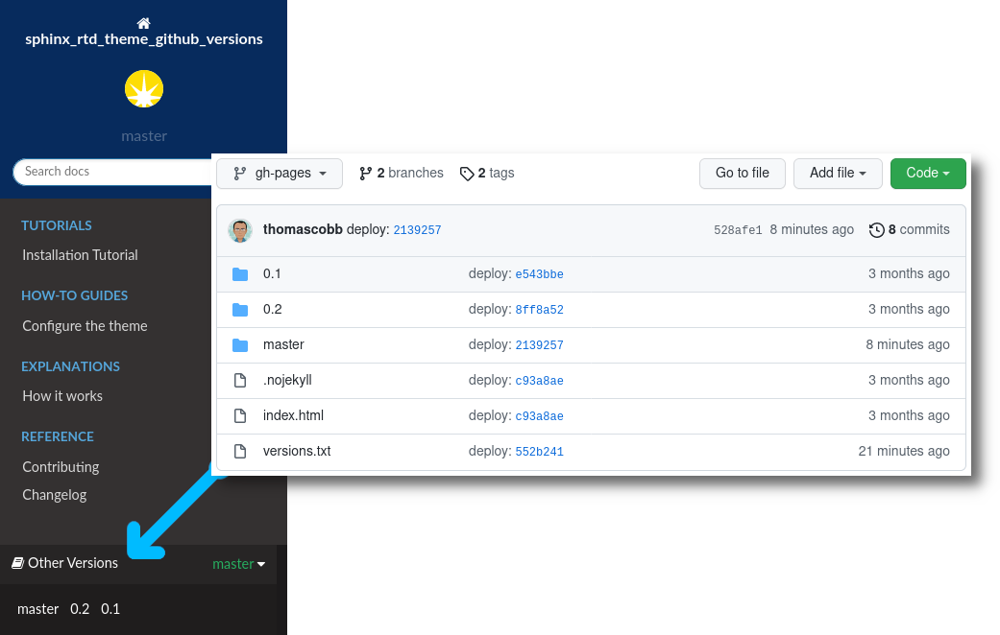

sphinx_rtd_theme_github_versions¶


This theme inherits from sphinx_rtd_theme and adds an entry in the sidebar listing all versions of the documentation on github.io for the current repo
PyPI |
|
Source code |
https://github.com/dls-controls/sphinx_rtd_theme_github_versions |
Documentation |
https://dls-controls.github.io/sphinx_rtd_theme_github_versions |
Changelog |
https://github.com/dls-controls/sphinx_rtd_theme_github_versions/blob/master/CHANGELOG.rst |
